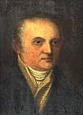

Mein Stammbaum

Personendiagramm
Weitere Namen
| Weitere Namen | Name |
|---|---|
| Geburtsname | Franz Theodor Schubert |
Eltern
| Vater | Geburtsdatum | Mutter | Geburtsdatum |
|---|---|---|---|
 Karl Schubert Karl Schubert |
06.07.1723 |  Susanna Muck Susanna Muck |
1730 |
Partner
Personenereignisse
| Ereignisart | Datum | Ort | Beschreibung |
|---|---|---|---|
 Geburt Geburt |
11.07.1763 | Neudorf, Mährisch Schönberg, Moravia, Austria | |
| Heirat |
17.01.1785 | Lichtental, Vienna, Austria | |
| Heirat |
25.04.1813 | Gumpendorf, Vienna, Austria | |
| Tod |
09.07.1830 | Vienna, Austria |
Quellen
| Beschreibung | Seite | Qualität | Information | Beweis |
|---|---|---|---|---|
| Trauungsbuch 1784-1789, Lichtenthal |
24 | Original | Primär | Direkt |